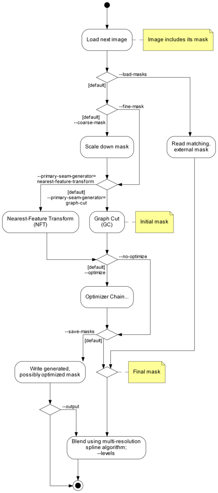
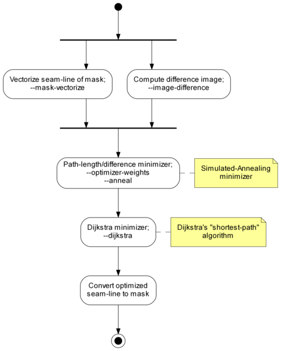
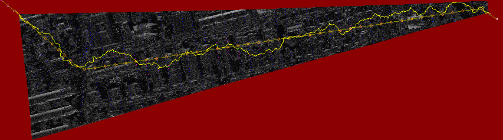

Combining Multiple Images |
This manual is for Enblend version ⟨4.2⟩, a tool for compositing images in such a way that the seam between the images is invisible, or at least very difficult to see.
Permission is granted to copy, distribute and/or modify this document under the terms of the GNU Free Documentation License, Version 1.2 or any later version published by the Free Software Foundation; with no Invariant Sections, no Front-Cover Texts and no Back-Cover Texts. A copy of the license is included in the section entitled “GNU Free Documentation License”.
Chapters or sections marked with a “c”-sign appear in both manuals, i.e. the Enblend manual and the Enfuse manual. The commonality extends to all sub-sections of the marked one.
This manual uses some typographic conventions to clarify the subject. The markup of the ready-to-print version differs from the web markup.
| Category | Description | Examples |
| Acronym | Common acronym | sRGB, OpenMP |
| Application | GUI or CLI application | Hugin, Enblend |
| Command | Name of a binary in the running text | convert, enblend |
| Common part | Chapter, section, or any other part that appears in both manuals | Response Filesc |
| Default | Value as compiled into the enblend binary that belongs to this documentation | ⟨1⟩, ⟨a.tif⟩ |
| Environment variable | Variable passed to enblend by the operating system | PATH, TMPDIR |
| Filename | Name of a file in the filesystem | a.tif |
| Filename extension | Name of a filename extension with or without dots | .png, tiff |
| Fix me! | Section that needs extending or at least some improvement | FIXExplainME |
| Literal text | Text that (only) makes sense when typed in exactly as shown | uint16 |
| Option | Command-line option given to enblend | --verbose |
| Optional part | Optional part of a syntax description in square brackets | --verbose [=LEVEL] |
| Placehoder | Meta-syntactic variable that stands in for the actual text | ICC-PROFILE |
| Proper name | Name of a person or algorithm | Dijkstra |
| Restricted note | Annotation that applies only to a particular program, configuration, or operating system | Enblend. |
| Sample | Literal text in quotes | ‘%’ or ‘--help’ |
| Side note | Non-essential or “geeky” material | Gory details |
| White space | Indispensable white space | r␣g␣b |
Enblend overlays multiple images using the Burt-Adelson multi-resolution spline multi-resolution spline algorithm.1 This technique tries to make the seams between the input images invisible. The basic idea is that image features should be blended across a transition zone proportional in size to the spatial frequency of the features. For example, objects like trees and windowpanes have rapid changes in color. By blending these features in a narrow zone, you will not be able to see the seam because the eye already expects to see color changes at the edge of these features. Clouds and sky are the opposite. These features have to be blended across a wide transition zone because any sudden change in color will be immediately noticeable.
Enblend expects each input file to have an alpha channel. The alpha channel should indicate the region of the file that has valid image data. Enblend compares the alpha regions in the input files to find the areas where images overlap. Alpha channels can be used to indicate to Enblend that certain portions of an input image should not contribute to the final image.
Enblend does not align images. Use a tool such as Hugin or PanoTools to do this. The TIFF files produced by these programs are exactly what Enblend is designed to work with. Sometimes these GUIs allow to select feathering for the edges the images. This treatment is detrimental to Enblend. Turn off feathering by deselecting it or setting the “feather width” to zero.
Enblend blends the images in the order they are specified on the command line. You should order your images according to the way that they overlap, for example from left-to-right across the panorama. If you are making a multi-row panorama, we recommend blending each horizontal row individually, and then running Enblend a last time to blend all of the rows together vertically. The input images are processed in the order they appear on the command line. Multi-layer images are processed from the first layer to the last before Enblend considers the next image on the command line. Consult Section 4.5 on how to change the images’ order within multi-layer image files.
Find out more about Enblend on its SourceForge web page.
Enblend has its limitations. Some of them are inherent to the programs proper others are “imported” by using libraries as for example VIGRA. Here are some of the known ones.
The overlap is exclusively defined by the masks of the overlapping images. This is exactly what the input masks are built for. Let A be the number of pixels that overlap in both masks. We use A as a measure of the overlap area – something 2-dimensional; technically it is a pixel count.Construct the smallest circumscribed, par-axial rectangle of the overlap area. The rectangle has a circumference
U = 2 (a + b), which is of course 1-dimensional. Internally U again is a number of pixels just as A.
The threshold when we consider a pair of images sufficiently different is when A is larger than ⟨2⟩ times the number of pixels on the circumference U
A > ⟨2⟩ × U. Avoiding the term “fractal dimension”, we have constructed a simple measure of how 2-dimensional the overlap area is. This way we steer clear of feeding later processing stages with nearly 1-dimensional overlap regions, something that wreaks havoc on them.
Enblend and Enfuse are parts of a chain of tools to assemble images.
Figure 3.1 shows where Enblend and Enfuse sit in the tool chain of the standard workflow.
There is one exception with Enfuse when a single raw image is converted multiple times to get several – typically differently “exposed” – images.
Exemplary Benefits:
Remaining Problem: The “overlayed” images may not fit together, that is the overlay regions may not match exactly.
Again there is one exception and this is when images naturally align. For example, a series of images taken from a rock solid tripod with a cable release without touching the camera, or images taken with a shift lens, can align without further user intervention.
This step submits the images to affine transformations.
If necessary, it rectifies the lens’ distortions (e.g. barrel or pincushion), too.
Sometimes even luminance or color differences between pairs of overlaying images are corrected (“photometric alignment”).
Benefit: The overlay areas of images match as closely as possible given the quality if the input images and the lens model used in the transformation.
Remaining Problem: The images may still not align perfectly, for example, because of parallax errors, or blur produced by camera shake.
Benefit: The overlay areas become imperceptible for all but the most misaligned images.
Remaining Problem: Enblend and Enfuse write images with an alpha channel; for more information on alpha channels see Chapter 8. Furthermore, the final image rarely is rectangular.
In the usual workflow Enblend and Enfuse generate the blending and fusing masks according to the command-line options and the input images including their associated alpha-channels, and then they immediately use these masks for multi-resolution blending or multi-resolution fusing the output image.
Sometimes more control over the masks is wanted. To this end, both applications provide the option pair --load-masks and --save-masks. See Chapter 4, for detailed explanations of both options. With the help of these options the processing can be broken up into two phases:
Avoid option --output here unless the blended or fused image at this point is wanted.
Neither application (re-)generates any mask in this phase. The loaded masks completely control the multi-resolution blending or multi-resolution fusing the output image.
In between these two steps the user may apply whatever transformation to the mask files, as long as their geometries and offsets remain the same. Thus the “Combine Images” box of Figure 3.1 becomes three activities as is depicted in Figure 3.2.

Figure 3.2: Workflow for externally modified masks. The “Blend or Fuse Using Masks” step utilizes the multi-resolution algorithm just as for internal workflow without mask files.
To further optimize this kind of workflow, both Enblend and Enfuse stop after mask generation if option --save-masks is given, but no output file is specified with the --output option. This way the time for pyramid generation, blending, fusing, and writing the final image to disk is saved, as well as no output image gets generated.
Note that options --save-masks and --load-masks cannot be used simultaneously.
This section explains how to find out about the inner workings of your version of Enblend without looking at the source code. And it states how to interact with Enblend besides passing command-line options and image filenames.
An enblend binary can come in several configurations. The exact name of the binary may vary and it may or may not reflect the “kind of enblend”. Therefore, enblend offers several options that allow the user to query exactly…
The information are explained in detail in the following sections.
Example 3.3.1 shows a possible output of ‘enblend --version’. The version number at the beginning of the text tells about the exact version of the binary. It is the number that can be compared with the version number of this document, which by the way is ⟨4.2⟩. Our slightly cranky markup (see also Notation) dispels copy-paste errors.
$ enblend --version
enblend 4.2-02c1f45857b4
Copyright (C) 2004-2009 Andrew Mihal.
Copyright (C) 2009-2015 Christoph Spiel.
License GPLv2+: GNU GPL version 2 or later <http://www.gnu.org/licenses/gpl.html>
This is free software: you are free to change and redistribute it.
There is NO WARRANTY, to the extent permitted by law.
Written by Andrew Mihal, Christoph Spiel and others.
The version indicator consist of a two (major and minor version) or three (major and minor version plus patch-level) numbers separated by dots and an optional hexadecimal identifier. Binaries from the “Development Branch” are assigned two-part version numbers, whereas a three-part version number is reserved for the “Stable Branch” of development. Officially released versions lack the hexadecimal identifier.
Examples:
Matching the version codes is the only reliably way to pair a given binary with its manual page (“manual page for enblend 4.2-1e4d237daabf”) and its documentation. This document mentions the version code for example on its Title and the Abstract.
The twelve-digit hexadecimal ID-CODE is automatically generated by our source-code versioning system, Mercurial. Use the ID-CODE to look up the version on the web in our public source code repository or, if you have cloned the project to your own workspace, with the command
Adding option --verbose to --version will reproduce the information described in the previous section plus a list of “extra features”. Any unavailable feature in the particular binary queried returns
whereas available features answer “yes” followed by a detailed report on the feature and its connection to some library or specific hardware. Example 3.3.2 shows such a report. Remember that your binary may include more or less of the features displayed there.
$ enblend --version --verbose
enblend 4.2-95f1fed2bf2d
Extra feature: dynamic linking support: yes
Extra feature: image cache: no
Extra feature: OpenMP: no
Copyright (C) 2004-2009 Andrew Mihal.
Copyright (C) 2009-2015 Christoph Spiel.
License GPLv2+: GNU GPL version 2 or later <http://www.gnu.org/licenses/gpl.html>
This is free software: you are free to change and redistribute it.
There is NO WARRANTY, to the extent permitted by law.
Written by Andrew Mihal, Christoph Spiel and others.
The ‘--version --verbose’ combo is one of the first things test if enblend “suddenly” behaves strangely.
Check for extra feature OpenMP.
Check for extra feature OpenCL.
Ensure that neither feature mmap-view nor image-cache has been compiled in.
No, there is no command-line switch for that, but you can use a version with mmap-view feature.
Under extra feature OpenMP look for “support for dynamic adjustment of the number of threads”.
Enblend can read and write a fixed set of image formats if it was compiled to support them. For example the EXR-format requires special support libraries. Use option --show-image-formats to find out
The only three image formats always supported are
All others are optional. In particular the high-dynamic range (HDR) format OpenEXR only gets compiled if several non-standard libraries are available.
The provided per-channel depths range from just one, namely “8 bits unsigned integral” (uint8) up to seven:
Table 3.1 summarizes the channel bit depths of some prominent image formats.
Channel Bit-Depth Format Mask Profile Integral Floating-Point uint8 uint16 uint32 float double JPEG − • • − − − − PNG • • • • − − − PNM ? − • • • − − [V]TIFF • • • • • • •
Table 3.1: Bit-depths of selected image formats. These are the maximum capabilities of the formats themselves, not Enblend’s. The “Mask”-column indicates whether the format supports an image mask (alpha-channel), see also Chapter 8. Column “Profile” shows whether the image format allows for ICC-profiles to be included; see also Chapter 7.
During building each enblend is automatically signed to give the users an extra level of confidence that it was constructed by someone that they can trust to get it right. Access this signature with ‘--show-signature’ and enblend will print something like
where machine name, person, and date-time depend on the build.
Sometimes enblend refuses to start or runs into trouble because the libraries supplied to it do not match the ones it was compiled with. Option --show-software-components can be helpful to diagnose the problem in such cases, because it shows the version information of Enblend’s most important libraries as they have identified themselves during compile-time.
Furthermore the report reveals the compiler used to build enblend along with the most important compiler extensions like, for example, OpenMP. Example 3.3.3 shows such a report.
$ enblend --show-software-components
Compiler
g++ 4.9.1
implementing OpenMP standard of 2013-7
implementing Cilk version 2.0
without support of "_Cilk_for" keyword
Libraries
GSL: 1.15
Little CMS: 2.7.0
Vigra: 1.10.0
Example 3.3.3: Output of enblend when asked to reveal the compiler that was used to build it along with the libraries it was linked against.
Enblend is meant to read multiple images, “montage” them together, and finally write a single output image. So, any console messages either serve the entertainment desire of the user or indicate problems.
When enblend is instructed to only show information about its configuration (see Section 4.2.6) the text goes to Standard Output. enblend sends error and warning messages to Standard Error. The messages follow a fixed format.
where CATEGORY is
Most messages drop category name ‘error’ and plainly write MESSAGE:
If an ‘error’ actually leads to a premature termination of enblend, it returns code 1 to the operating system. On successful termination the return code is 0.
Sadly, not all messages can be sorted in the category scheme.
and LibTIFF:
If the installation of enblend is correct, this type of message may warrant a bug report as explained in Appendix B.
In very unfortunate circumstances Enblend quits because of a problem, but does not show any message. The output file then either does not exist or it is broken. One known reason are out-of-memory situations, where the process needs additional memory, but cannot allocate it and while terminating needs even more memory so that the operating system wipes it out completely wherever it then happens to be in its execution path.
A small set of environment variables influences the execution of enblend. All of them depend on enblend having been compiled with certain features. The hint “(direct)” indicates genuine variables in enblend, whereas “(implicit)” denotes variables that control libraries that are linked with enblend.
The important hot spots in the source code override the value of OMP_DYNAMIC.
Assemble the sequence of images INPUT… into a single IMAGE.
enblend [OPTIONS] [--output=IMAGE] INPUT…
INPUT images are either specified literally or via so-called response files (see Section 4.4). The latter are an alternative to specifying image filenames on the command line. If omitted, the name of the output IMAGE defaults to ⟨a.tif⟩.
All input images for Enblend must comply with the following requirements.
This is, either all images are black-and-white (one channel and alpha channel) or all are RGB-color images (three channels and alpha channel).
See option --depth for an explanation of different output depths.
You can check the supported extensions and formats by calling Enblend with option --show-image-formats.
Moreover, there are some good practices, which are not enforced by the application, but almost certainly deliver superior results.
In this section we group the options as the command-line help
does and sort them alphabetically within their groups. For an alphabetic list of all options consult the Option Index.
enblend accepts arguments to any option in uppercase as well as in lowercase letters. For example, ‘deflate’, ‘Deflate’ and ‘DEFLATE’ as arguments to the --compression option described below all instruct enblend to use the Deflate compression scheme. This manual denotes all arguments in lowercase for consistency.
Common options control some overall features of Enblend. They are called “common” because they are used most often. However, in fact, Enblend and Enfuse do have these options in common.
Depending on the output file format, Enblend accepts different values for COMPRESSION.
The number of levels used in a pyramid controls the balance between local and global image features (contrast, saturation, …) in the blended region. Fewer levels emphasize local features and suppress global ones. The more levels a pyramid has, the more global features will be taken into account.
As a guideline, remember that each new level works on a linear scale twice as large as the previous one. So, the zeroth layer, the original image, obviously defines the image at single-pixel scale, the first level works at two-pixel scale, and generally, the nth level contains image data at 2n-pixel scale. This is the reason why an image of width × height pixels cannot be deconstructed into a pyramid of more than
⌊ log2(min(width, height)) ⌋ levels. If too few levels are used, “halos” around regions of strong local feature variation can show up. On the other hand, if too many levels are used, the image might contain too much global features. Usually, the latter is not a problem, but is highly desired. This is the reason, why the default is to use as many levels as is possible given the size of the overlap regions. Enblend may still use a smaller number of levels if the geometry of the overlap region demands.
Positive values of LEVELS limit the maximum number of pyramid levels. Depending on the size and geometry of the overlap regions this may or may not influence any pyramid. Negative values of LEVELS reduce the number of pyramid levels below the maximum no matter what the actual maximum is and thus always influence all pyramids. Use ‘auto’ or ‘automatic’ as LEVELS to restore the automatic calculation of the maximum number of levels.
The valid range of the absolute value of LEVELS is ⟨1⟩ to ⟨29⟩.
Level Messages 0 only warnings and errors 1 reading and writing of images 2 mask generation, pyramid, and blending 3 reading of response files, color conversions 4 image sizes, bounding boxes and intersection sizes 5 Enblend only. detailed information on the optimizer runs 6 estimations of required memory in selected processing steps
The default verbosity level of Enblend is ⟨1⟩.
Advanced options control e.g. the channel depth, color model, and the cropping of the output image.
Usually, Enblend chooses defaults depending on the input images:
On the order of fast to slow computation, Enblend supports the following blend colorspaces.
Please keep in mind that by using different blend colorspaces, blending may not only change the colors of the output image, but Enblend may choose different seam line routes as some seam-line optimizers are guided by image differences, which are different when viewed in different colorspaces.
Enblend always uses a smart way to change the channel depth to assure highest image quality at the expense of memory, whether requantization is implicit because of the output format or explicit through option --depth.
All DEPTH specifications are valid in lowercase as well as uppercase letters. For integer format, use
For floating-point format, use
If the requested DEPTH is not supported by the output file format, Enblend warns and chooses the DEPTH that matches best.
The OpenEXR data format is treated as IEEE754 float internally. Externally, on disk, OpenEXR data is represented by “half” precision floating-point numbers.OpenEXR half precision floating-point, 16 bit wide, 10 bit significant;
- Minimum normalized value: 9.3· 10−10
- Epsilon: 2.0· 10−3
- Maximum finite value: 4.3· 109
This option only is useful when the input images are cropped TIFF files, such as those produced by nona.
Note that option -f neither rescales the output image, nor shrinks the canvas size below the minimum size occupied by the union of all input images.
The Gimp before version 2.0 and CinePaint (see Appendix A) exhibit unusual behavior when loading images with unassociated alpha channels. Use option -g to work around this problem. With this flag Enblend will create the output image with the “associated alpha tag” set, even though the image is really unassociated alpha.
As this option significantly increases memory usage and computation time only use it, if the panorama will be
Otherwise, always avoid this option!
With this option Enblend treats the set of input images (panorama) of width w and height h as an infinite data structure, where each pixel P(x, y) of the input images represents the set of pixels SP(x, y).
Solid-state physicists will be reminded of the Born-von Kármán boundary condition.
MODE takes the following values:
| SP(x, y) = {P(x + m w, y): m ∈ Z}. |
This is useful for 360∘ horizontal panoramas as it eliminates the left and right borders.
| SP(x, y) = {P(x, y + n h): n ∈ Z}. |
This is useful for 360∘ vertical panoramas as it eliminates the top and bottom borders.
| SP(x, y) = {P(x + m w, y + n h): m, n ∈ Z}. |
In this mode, both left and right borders, as well as top and bottom borders, are eliminated.
Specifying ‘--wrap’ without MODE selects horizontal wrapping.
These options control the generation and the usage of masks.
If omitted FACTOR defaults to ⟨8⟩, this means, option --coarse-mask shrinks the overlapping areas by a factor of ⟨8⟩×⟨8⟩. With FACTOR = 8 the total memory allocated during a run of Enblend shrinks approximately by 80% and the maximum amount of memory in use at a time is decreased to some 40% in comparison to a full-size (“fine”) mask.
Valid range: FACTOR = 1, 2, 3, …, where 1 reproduces --fine-mask.
Also see the negated option, ‘--fine-mask’ and Table 4.2.
Active Options --no-optimize --optimize --fine-mask Use NFT mask. Vectorize NFT mask, optimize vertices with simulated annealing and Dijkstra’s shortest path algorithm, fill vector contours to recover mask. --coarse-mask Scale down overlap region, compute NFT mask and vectorize it, fill vector contours. Scale down overlap region, vectorize NFT mask, optimize vertices with simulated annealing and Dijkstra’s shortest path algorithm, fill vector contours to recover mask.
Table 4.2: Various options that control the generation of masks. All mask computations are based on the Nearest-Feature Transformation (NFT) of the overlap region.
Also see option --coarse-mask and Table 4.2.
See option --save-masks below for details.
Algorithm Tuning Parameters Simulated Annealing Tune with option --anneal = TAU : DELTA-E-MAX : DELTA-E-MIN : K-MAX. Simulated-Annealing. FIXExplain Simulated-Annealing!ME Dijkstra Shortest Path Tune with option --dijkstra = RADIUS. Dijkstra algorithm. FIXExplain Dijkstra algorithm!ME
Option --no-optimize negates --optimize and thus turns off seam line optimization. Combined with option --fine-mask this will produce the same type of mask as Enblend version 2.5, namely the result of a Nearest-Feature Transform (NFT).
Use this option if you wish to edit the location of the seam line by hand. This will give you images of the right sizes that you can edit to make your changes. Later, use option --load-masks to blend the project with your custom seam lines.
Enblend will stop after saving all masks unless option --output is given, too. With both options given, this is, ‘--save-masks’ and ‘--output’, Enblend saves all masks and then proceeds to blend the output image.
IMAGE-TEMPLATE defines a template that is expanded for each input file. In a template a percent sign (‘%’) introduces a variable part. All other characters are copied literally. Lowercase letters refer to the name of the respective input file, whereas uppercase ones refer to the name of the output file (see Section 4.2.1). Table 4.4 lists all variables.A fancy mask filename template could look like this:
It puts the mask files into the same directory as the output file ‘%D’, generates a two-digit index ‘%02n’ to keep the mask files nicely sorted, and decorates the mask filename with the name of the associated input file ‘%f’ for easy recognition.
This image will show Enblend’s view of the overlap region and how it decided to route the seam line. If you are experiencing artifacts or unexpected output, it may be useful to include this visualization image in your bug report. For a detailed description of the image, consult Chapter 6.
VISUALIZE-TEMPLATE defines a template that is expanded for each input file. In a template, a percent sign (‘%’) introduces a variable part; all other characters are copied literally. Lowercase letters refer to the name of the respective input file, whereas uppercase ones refer to the name of the output file (see option --output). Table 4.4 lists all variables.
Table 4.4: Special format characters to control the generation of mask filenames. Uppercase letters refer to the output filename and lowercase ones to the input files.
Control inner workings of Enblend and in particular the interpretation of images.
Compare option --blend-colorspace and Chapter 7.3 on color profiles.
Enblend offers the following algorithms:
This algorithm is useful to temporarily exclude some images in response files.
This option has the negated form ‘--no-parameter’, which takes one or more KEYs and removes them from the list of defined parameters. The special key ‘*’ deletes all parameters at once.
Parameters allow the developers to change the internal workings of Enblend without the need to recompile or relink.
Jack O’Neill: I don’t think we will, first one being a black hole and all. They get progressively darker after that.
This overrides the default behavior which is to blend the images sequentially in the order given on the command line. Enblend will use fewer blending iterations, but it will do more work in each iteration.
This option has the negated form ‘--no-pre-assemble’, which restores the default.
These options allow for a detailed control of the seam-line optimizers which govern the mask generation.
Append a percent sign (‘%’) to specify TAU as a percentage.
Valid range: ⟨0⟩ < TAU < ⟨1⟩.
The default is ⟨0.75⟩; values around 0.95 are reasonable. Usually, slower cooling results in more converged points.
Valid range: ⟨0⟩ < DELTA-E-MIN < DELTA-E-MAX.
In particular they determine the initial and final annealing temperatures according to:
|
The defaults are: DELTA-E-MAX: ⟨7000.0⟩ and DELTA-E-MIN: ⟨5.0⟩.
Valid range: K-MAX ≥ ⟨3⟩.
The default is ⟨32⟩. Values around 100 seem reasonable.
A small value prefers straight line segments and thus shorter seam lines. Larger values instruct the optimizer to let the seam line take more detours when searching for the best seam line.
Valid range: RADIUS ≥ ⟨1⟩.
Default: ⟨25⟩ pixels.
Enblend calculates the difference of a pair of overlapping color images when it generates the primary seam with a Graph-Cut and also before it optimizes the seams. It employs a user-selectable ALGORITHM that is controlled by the
For black-and-white images the difference is simple the absolute difference of each pair of pixels.
| d = max | ⎛ ⎝ | wluma × |l(P1) − l(P2)|, wchroma × |h(P1) − h(P2)| | ⎞ ⎠ | . |
This algorithm was the default for Enblend up to version 4.0.
|
This is the default in Enblend version 4.1 and later.
Note that the “delta-E” mentioned here has nothing to do with DELTA-E-MAX and DELTA-E-MIN of option --anneal.
Both LUMINANCE-WEIGHT and CHROMINANCE-WEIGHT are non-negative. Enblend automatically normalizes the sum of LUMINANCE-WEIGHT and CHROMINANCE-WEIGHT to one. Thus,
and
define the same weighting function.
The default LUMINANCE-WEIGHT is ⟨1.0⟩ and the default CHROMINANCE-WEIGHT is ⟨1.0⟩.
At higher verbosity levels Enblend computes the true size of the overlap area in pixels and it calculates the average and standard deviation of the difference per pixel in the normalized luminance interval (0…1). These statistical measures are based on ALGORITHM, therefore they should only be compared for identical ALGORITHMs. The average difference is a rough measure of quality with lower values meaning better matches.
If Enblend uses a coarse mask (--coarse-mask) or Enblend optimizes (--optimize) a mask it vectorizes the initial seam line before performing further operations. See Table 4.2 for the precise conditions. DISTANCE tells Enblend how long to make each of the line segments called vectors here.
The unit of DISTANCE is pixels unless it is a percentage as explained in the next paragraph. In fine masks one mask pixel corresponds to one pixel in the input image, whereas in coarse masks one pixel represents for example ⟨8⟩ pixels in the input image.
Append a percentage sign (‘%’) to DISTANCE to specify the segment length as a fraction of the diagonal of the rectangle including the overlap region. Relative measures do not depend on coarse or fine masks, they are recomputed for each mask. Values around 5%–10% are good starting points.
This option strongly influences the mask generation process! Large DISTANCE values lead to shorter, straighter, less wiggly, less baroque seams that are on the other hand less optimal, because they run through regions of larger image mismatch instead of avoiding them. Small DISTANCE values give the optimizers more possibilities to run the seam around high mismatch areas.
What should never happen though, are loops or cusps in the seam line. Counter loops and cusps with higher weights of DISTANCE-WEIGHT (option --optimizer-weights), larger vectorization DISTANCEs, and TAUs (option --anneal) that are closer to one. Use option --visualize to check the results.
Valid range: DISTANCE ≥ ⟨4⟩.
Enblend limits DISTANCE so that it never gets below ⟨4⟩ even if it has been given as a percentage. The user will be warned in such cases.
Defaults: ⟨4⟩ pixels for coarse masks and ⟨20⟩ pixels for fine masks.
The seam-line optimizer considers two qualities of the seam line:
DISTANCE-WEIGHT and MISMATCH-WEIGHT define how to weight these two criteria. Enblend up to version 3.2 used 1:1. This version of Enblend uses ⟨8.0⟩:⟨1.0⟩.
A large DISTANCE-WEIGHT pulls the optimized seam line closer to the initial position. A large MISMATCH-WEIGHT makes the seam line go on detours to find a path along which the mismatch between the images is small. If the optimized seam line shows cusps or loops (see option --visualize), reduce MISMATCH-WEIGHT or increase DISTANCE-WEIGHT.
Both weights must be non-negative. They cannot be both zero at the same time. Otherwise, their absolute values are not important as Enblend normalizes their sum.
This is the ALGORITHM that produces an initial seam line, which serves as the basis for later, optional optimizations. Nearest Feature Transform (NFT) is the only algorithm up to and including Enblend version 4.0. Version 4.1 added a Graph-Cut (GC) algorithm, which is the default for version 4.2 and later.
Valid ALGORITHM names are:
See Chapter 5 for details on Enblend’s primary seam generators.
Depending on the build-time configuration and the operating system the binary may support different globbing algorithms. See Section 4.4.3.
Depending on the build-time configuration and the operating system, the binary supports different image formats, typically: BMP, EXR, GIF, HDR, JPEG, PNG, PNM, SUN, TIFF, and VIFF and recognizes different image-filename extensions, again typically: bmp, exr, gif, hdr, jpeg, jpg, pbm, pgm, png, pnm, ppm, ras, tif, tiff, and xv.
The maximum number of different per-channel depths any enblend provides is seven:
This information can be helpful to ensure the binary was created by a trustworthy builder.
Technically, the version information is taken from header files, thus it is independent of the dynamic-library environment the binary runs within. The library versions printed here can help to reveal version mismatches with respect to the actual dynamic libraries available to the binary.
Team this option with --verbose to show configuration details, like the extra features that may have been compiled in. For details consult Section 3.3.1.
Figure 4.1 depicts Enblend’s internal work flow and shows what option influences which part. Enblend works incrementally. Thus, no matter whether starting with the first image or the result of blending any previous images, it loads the next image. After blending it the result again is a single image, which serves as base for the next input image, this is the next iteration.

Figure 4.1: Enblend’s internal work flow for the “next” image. The defaults are indicated like ‘[default]’. The Optimizer Chain is complicated enough to warrant its own chart in Figure 4.2.
Figure 4.1 somewhat simplifies the program flow.
- The Graph Cut algorithm needs an initial “guess” of the seam line. It gets it by running a Nearest-Feature Transform.
- If the overlap between the previous image and the next image is too small, the “Scale down mask” step is skipped and Enblend works with the mask in its original size (“fine mask”) no matter what the command-line options specify.

Figure 4.2: A closer look the Optimizer Chain of Figure 4.1.
Enblend and Enfuse allow the arguments supplied to the programs’ options to be separated by different separators. The online documentation and this manual, however, exclusively use the colon ‘:’ in every syntax definition and in all examples.
Valid delimiters are the semicolon ‘;’, the colon ‘:’, and the slash ‘/’. All delimiters may be mixed within any option that takes numeric arguments.
Examples using some Enfuse options:
Here, the accepted delimiters are comma ‘,’, semicolon ‘;’, and colon ‘:’. Again, all delimiters may be mixed within any option that has filename arguments.
Examples:
A response file contains names of images or other response filenames. Introduce response file names at the command line or in a response file with an ⟨@⟩ character.
Enblend and Enfuse process the list INPUT strictly from left to right, expanding response files in depth-first order. Multi-layer files are processed from first layer to the last. The following examples only show Enblend, but Enfuse works exactly the same.
The ultimate order in which the images are processed is: image-1.tif, image-2.tif, image-3.tif.
where file list contains
Ultimate order: img1.exr, img2.exr, img3.exr, img4.exr.
where file master.list comprises of
first.list is
and second.list contains
Ultimate order: image-01.png, image-02.png, image-03.png, image-04.png, image-05.png, image-06.png, image-07.png, image-08.png, image-09.png, image-10.png,
Response files contain one filename per line. Blank lines or lines beginning with a ⟨#⟩ sign are ignored; the latter can serve as comments. Filenames that begin with a ⟨@⟩ character denote other response files. Table 4.5 states a formal grammar of response files in EBNF.
response-file ::= line* line ::= (comment | file-spec) [‘\r’] ‘\n’ comment ::= space* ‘#’ text file-spec ::= space* ‘@ ’ filename space* space ::= ‘␣’ | ‘\t’ where text is an arbitrary string and filename is any filename.
In a response file relative filenames are used relative the response file itself, not relative to the current-working directory of the application.
The above grammar might surprise the user in the some ways.
only the first line contains a comment, whereas the second line includes none. Rather, it refers to a file called
If Enblend or Enfuse do not recognize a response file, they will skip the file and issue a warning. To force a file being recognized as a response file add one of the following syntactic comments to the first line of the file.
Finally, Example 4.4.4 shows a complete response file.
# These pictures were taken with the panorama head.
@ round-shots.list
# Freehand sky shot.
zenith.tif
# "Legs, will you go away?" images.
nadir-2.tif
nadir-5.tif
nadir.tif
Comments that follow the format described in Table 4.6 are treated as instructions how to interpret the rest of the response file. A syntactic comment is effective immediately and its effect persists to the end of the response file, unless another syntactic comment undoes it.
syntactic-comment ::= space* ‘#’ space* key space* ‘:’ space* value key ::= (‘A’…‘Z’ | ‘a’…‘z’ | ‘-’)+ where value is an arbitrary string.
Unknown syntactic comments are silently ignored.
A special index for syntactic comments lists them in alphabetic order.
The three equivalent syntactic keys
control the algorithm that Enblend or Enfuse use to glob filenames in response files.
All versions of Enblend and Enfuse support at least two algorithms: literal, which is the default, and wildcard. See Table 4.7 for a list of all possible globbing algorithms. To find out about the algorithms in your version of Enblend or Enfuse use option --show-globbing-algorithms.
- literal
- Do not glob. Interpret all filenames in response files as literals. This is the default.
Please remember that white-space at both ends of a line in a response file always gets discarded.
- wildcard
- Glob using the wildcard characters ‘?’, ‘*’, ‘[’, and ‘]’.
The Win32 implementation only globs the filename part of a path, whereas all other implementations perform wildcard expansion in all path components. Also see glob(7).
- none
- Alias for literal.
- shell
- The shell globbing algorithm works as literal does. In addition, it interprets the wildcard characters ‘{’, ‘@’, and ‘~’. This makes the expansion process behave more like common UN*X shells.
- sh
- Alias for shell.
Example 4.4.5 gives an example of how to control filename-globbing in a response file.
# 15 images
# filename-globbing: wildcard
image_000[0-9].tif
image_001[0-4].tif
The key layer-selector provides the same functionality as does the command-line option --layer-selector, but on a per response-file basis. See Section 4.2.1.
This syntactic comment affects the layer selection of all images listed after it including those in included response files until another layer-selector overrides it.
Some image formats, like for example TIFF, allow for storing more than one image in a single file, where all the contained images can have different sizes, number of channels, resolutions, compression schemes, etc. The file there acts as a container for an ordered set of images.
In the TIFF-documentation these are known as “multi-page” files and because the image data in a TIFF-file is associated with a “directory”, the files sometimes are also called “multi-directory” files. In this manual, multiple images in a file are called “layers”.
The main advantage of multi-layer files over a set of single-layer ones is a cleaner work area with less image-files and thus an easier handling of the intermediate products which get created when generating a panorama or fused image, and in particularly with regard to panoramas of fused images.
The difficulty in working with layers is their lack of a possibly mnemonic naming scheme. They do not have telling names like taoth-vaclarush or valos-cor, but only numbers.
To give the user the same flexibility in specifying and ordering images as with single-layer images, both Enblend and Enfuse offer a special syntax to select layers in multi-page files by appending a layer-specification to the image file name. Table 4.8 defines the grammar of layer-specifications.
Selecting a tuple of layers with a layer-specification overrides the active layer selection algorithm. See also option --layer-selector and Section 4.4. Layer selection works at the command-line as well as in Response Files; see Section 4.4.
layer-specification ::= ‘[’ selection-tuple ‘]’ selection-tuple ::= selection [ ‘:’ selection ] selection ::= { singleton | range } range ::= [ ‘reverse’ ] [ range-bound ] ‘..’ [ range-bound ] range-bound ::= singleton | ‘_’ singleton ::= index | ‘-’ index where index is an integral layer index starting at one.
The simplest layer-specification are the layer-indexes. The first layer gets index 1, the second layer 2, and so on. Zero never is a valid index! For convenience indexing backwards2 is also possible. This means by prefixing an index with a minus-sign (‘-’) counting will start with the last layer of the associated multi-page image, such that the last layer always has index -1, the next to last index -2 and so on. Out-of-range indexes are silently ignored whether forward or backward.
The single layer of a single-layer file always can be accessed either with index ‘1’ or ‘-1’.
Select a contiguous range of indexes with the range operator ‘⟨..⟩’, where the range-bounds are forward or backward indices. Leaving out a bound or substituting the open-range indicator ‘⟨_⟩’ means a maximal range into the respective direction.
Layer specifications ignore white space, but usual shells do not. This means that at the command-line
works, whereas spaced-out out phrase ‘multi-layer.tif [2 : ]’ must be quoted
Quoting will also be required if Enblend’s delimiters have special meanings to the shell.
Examples for an image with 8 layers.
Shell expansion will not work anymore with a file name terminated by a layer specification expression (or anything else), because to the shell it is not a file name anymore. Work around with, for example,$ enblend ‘for x in image-??.tif; do echo $x[2]; done‘or
$ enblend $(ls -1 image-??.tif | sed -e ’s/$/[2]/’)The order of the indices determines the order of the layers, this is, the images. An index can occur multiple times, which causes layer to be considered again. Consequently, this will lead to an error with Enblend, but may be desired with Enfuse in soft-mask mode to give the image more weight by mentioning it more than once.
Here are some tools that are particularly useful when working with multi-page files. For more helpful utilities check out Appendix A.
Please bear in mind that some image-processing tools – none of the above though – do not handle multi-page files correctly, where the most unfruitful ones only take care of the first layer and silently ignore any further layers.
This version of Enblend supports two main algorithms to generate seam lines. Use option --primary-seam-generator=ALGORITHM to select one of the generators.
NFT as implemented in this version of Enblend only takes into account the shape of the overlap area. It completely ignore the images’ contents.
The generator is based on the idea of finding a minimum cost “cut” of a graph created from a given image pair. A “cut” is where the seam line appears. GC determines the cost from the overlapping images’ contents.
The most significant difference between the two algorithms is the output mask gradation. NFT produces a coarse approximation of the seam, running as far away from the overlap-region borders as possible. The resulting mask could then be blended as-is, however, Enblend by default runs image-content dependent optimizers to increase the mask gradation and for example omits the regions where the images differ. The result is a finer seam line, which only loosely follows the shape of NFT’s primary seam.
Graph-Cut, on the other hand, is capable of producing the final mask in one pass without the need of further optimizers. It looks for a seam line that is globally optimal, taking into account feature frequency, as well as image dissimilarity. This means, the seam is less likely to cross lines like for example fences, lampposts, or road markings, where they would be visible.
The optimizers which run after NFT can also be run after GC. Nevertheless, GC works best just with a fine mask (option --fine-mask); optimizers are then automatically turned off to take full advantage of the detailed seam GC produces.
GC requires more memory and computation time to complete than NFT. Thus, it is best to prefer NFT where the images used are large and execution time is crucial. If quality is the priority, using GC and fine mask usually produces visually more pleasing results.
GC is currently limited to seams that begin and end on the images’ borders. This means that the algorithm cannot run in cases where, for example, one image is contained in another, resulting in a loop-like seam. In such cases, though, Enblend automatically falls back to a NFT-generated seam, making its application transparent to the user.
The visualization image shows the symmetric difference of the pixels in the rectangular region where two images overlap. The larger the difference the lighter shade of gray it appears in the visualization image. Enblend paints the non-overlapping parts of the image pair – these are the regions where no blending occurs – in ⟨dark red⟩. Table 6.1 shows the meanings of all the colors that are used in seam-line visualization images.
- ⟨dark red⟩ areas
- Non-overlapping parts of image pair.
- various shades of gray
- Difference of the pixel values in the overlap region.
- ⟨dark blue⟩ dot
- Location of an optimizer sample.
- ⟨medium green⟩ dot
- First sample of a line segment.
- ⟨light green⟩ dot
- Any other but first sample of a line segment.
- ⟨bright cyan⟩ dot
- State space sample inside the Dijkstra radius.
- ⟨bright magenta⟩ dot
- Non-converged point.
- ⟨dark yellow⟩ line
- Initial seam line as generated by the primary seam generator.
- ⟨bright yellow⟩ line
- Final seam line.
- ⟨bright white⟩ ⟨cross⟩
- Non-movable, or “frozen” endpoint of a seam-line segment that no optimizer is allowed to move around.
- ⟨light orange⟩ ⟨diamond⟩
- Movable endpoint of a seam-line segment, which seam-line optimizers can move.
Figure 6.1 shows an example of a seam-line visualization. It was produced with an Enblend run at all defaults plus passing options --fine-mask and --visualize.

The large ⟨dark red⟩ border is “off-limits” for Enblend, for the images do not overlap there. The dark wedge inside the ⟨dark red⟩ frame is where the images share a common region.
The initial seam-line (⟨dark yellow⟩) is almost straight with the exception of a single bend on the left side of the image and the final seam-line (⟨bright yellow⟩) meanders around it.
This chapter explains the connection of pixel data types, ICC-color profiles, blend color spaces in Enblend or Enfuse.
Here, we collectively speak of blending and do not distinguish fusing, for the basic operations are the same. Furthermore, we assume the multi-resolution spline algorithm has calculated a set of weights wi for i = 1, 2, … and ∑wi = 1 for each pixel that must be blended from the participating input pixels Pi, i = 1, 2, ….
In the simplest, non-trivial case we have to blend a pair of grayscale input pixels. Given their luminances L1, L2 and their weighting factor 0 ≤ w ≤ 1, what luminance L is their “weighted average”? This is the heart of Enblend’s and Enfuse’s pyramidal blending operations! We are in particular interested in a weighted average that appears visually correct, this is, our eyes and brains consider L convincing or at the very least credible.
Note that Enblend and Enfuse face different obstacles in their respective domains of use.
- Enblend
- The overlapping areas usually are well matched both geometrically and photometrically. The differences of the pixels that must be blended are small.
- Enfuse (using a Soft Mask1)
- The input images greatly differ in exposure, saturation, or contrast. This is exactly why we want to fuse them. Thus, the luminance, saturation, and hue differences to be handled by Enfuse are generally quite high.
The details of blending pixels and in particular color pixels is quite intricate, which is why we start this chapter with a mathematical introduction.
Let us first address grayscale images because they only require us to talk about luminances. For a linear representation of luminances, we just blend for a given t with
| L = t L1 + (1 − t) L2 with 0 ≤ t ≤ 1, (7.1) |
where the luminances Li, i = 1, 2, range from zero to their data-type dependent maximum value Lmax, thereby defining a “luminance interval”. We can always map this interval to (0, 1) by dividing the luminances by the maximum, which is why we call the latter “normalized luminance interval”:
| (0, Lmax) → (0, 1) (7.2) |
Obviously,
| 0 ≤ L ≤ 1 (7.3) |
holds for all values L := L / Lmax in the normalized luminance interval.
Sometimes images are gamma-encoded with exponent γ and the blended luminance becomes
| L′ = | ⎛ ⎝ | t L11/γ + (1 − t) L21/γ | ⎞ ⎠ | γ, (7.4) |
which couples t and L′ in a non-linear way. See also Eric Brasseur’s explanation of the gamma error in picture scaling.
Typical gamma values are γ = 2.2 for sRGB and AdobeRGB, 1.8 for AppleRGB, and ProPhotoRGB, 1.0 for Linear Rec709 RGB and any others with “linear” in their names. For an extensive overview check out Bruce Lindbloom’s Information on Working Color Spaces.
The usual color-input images fed into Enblend are RGB-encoded, which means each pixel comes as a triple of values (r, g, b)T that represent the red, green, and blue parts. We apply the normalization (7.2) to each of the three primary colors and arrive at an “RGB-cube” with unit edge length. The vectors of primary colors span the cube
| = | ⎛ ⎜ ⎜ ⎝ |
| ⎞ ⎟ ⎟ ⎠ | , |
| = | ⎛ ⎜ ⎜ ⎝ |
| ⎞ ⎟ ⎟ ⎠ | and |
| = | ⎛ ⎜ ⎜ ⎝ |
| ⎞ ⎟ ⎟ ⎠ | . |
For each point inside – familiarly called pixel – the generalization of (7.3) holds
| ⎛ ⎜ ⎜ ⎝ |
| ⎞ ⎟ ⎟ ⎠ | ≤ | ⎛ ⎜ ⎜ ⎝ |
| ⎞ ⎟ ⎟ ⎠ | ≤ | ⎛ ⎜ ⎜ ⎝ |
| ⎞ ⎟ ⎟ ⎠ | . (7.5) |
Blending the pixels of color images is more complicated than blending plain luminances. Although we can write down the naïve blending equation, (7.1), again for RGB-coded pixels
| P1 := | ⎛ ⎜ ⎜ ⎝ |
| ⎞ ⎟ ⎟ ⎠ | and P2 := | ⎛ ⎜ ⎜ ⎝ |
| ⎞ ⎟ ⎟ ⎠ |
and trivially arrive at
| P := | ⎛ ⎜ ⎜ ⎝ |
| ⎞ ⎟ ⎟ ⎠ | = t | ⎛ ⎜ ⎜ ⎝ |
| ⎞ ⎟ ⎟ ⎠ | + (1 − t) | ⎛ ⎜ ⎜ ⎝ |
| ⎞ ⎟ ⎟ ⎠ | with 0 ≤ t ≤ 1, (7.6) |
but this means
Floating-point images (EXR, floating-point TIFF, or VIFF) get a special treatment. Their values L are first converted by the Log-transform.
| Log(L) := | ⎧ ⎨ ⎩ |
| (7.7) |
which is undone by the inverse transform after blending. Here, log(x) with a lower-case initial denotes the natural logarithmic function (i.e. to base e). Figure 7.1 shows the forward transform in the range from −20 to 100. Around L = 0 function Log(L) has the series expansion
| Log(L) = 1 + L + |
| + O(L3), for 0 ≤ L < 1. |
This transform serves two purposes:
In the current version of Enblend and Enfuse it is strongly recommended to use blending inside the RGB-cube whenever the input data is in floating-point format; this is the default, too.
ICC-color profiles completely absorb gamma encodings (7.4) and ICC profile aware software like Enblend and Enfuse decode and encode images automatically respecting the gamma curves. Moreover color profiles define what is the darkest representable black, so called black-point
| L = 0 and (r, g, b)T = (0, 0, 0)T |
and analogously what is the purest and brightest white, the white-point
| L = 1 and (r, g, b)T = (1, 1, 1)T. |
By default, Enblend and Enfuse expect that either
Even black-and-white images benefit from having attached appropriate profiles!
In Case 1. the applications blend grayscale images in the normalized luminance interval and color images inside the sRGB-cube. To override the default sRGB-profile select the desired profile with option --fallback-profile.
In Case 2. the images first are by default transformed to CIELUV color space – respecting the input color profile – then they are blended or fused, and finally the data get transformed back to RGB color space defined by the profile of the input images. Consequently, the input profile is assigned to the output image. Enforce a different blending color space than CIELUV with option --blend-colorspace.
Mixing different ICC profiles or alternating between images with profiles and without them generates warnings as it generally leads to unpredictable results.
Floating-Point images are an exception to the above rules. They are always blended in the RGB cube by default. The next section describes their treatment in detail.
Enblend and Enfuse offer to work inside the RGB-cube (7.5) or in several perceptually uniform color spaces. To override the default select a particular blending color space with option --blend-colorspace. Here are the four available color spaces.
This is the fastest color space to do computations within, i.e. it consumes by far the least computing power, because no transform to or from any of the perceptually uniform color spaces is done.
Enblend uses perceptual rendering intent and either the input profile’s white-point or, if the ICC-profile lacks the cmsSigMediaWhitePointTag, fall back to the D50 white-point (see, e.g. Standard illuminant).
The conversions from and to L*a*b* are moderately fast to compute; L*a*b* mode is two to three times slower than working within the RGB-color cube.
The L*u*v* tries to be perceptually uniform in lightness as well as in color.
The applications use the same rendering intent and white-point as with L*a*b*.
The conversions from and to L*u*v* are almost as fast to compute as L*a*b*.
Internally, the polar coordinates (C, h) are translated to Cartesian coordinates for the pyramids.
The transformations to CIECAM02 color space and back use perceptual rendering intent, the D50 white point (see, e.g. Standard illuminant), 500 lumen surrounding light (“average” in CIECAM02 parlance), and assume complete adaption.
Both CIELUV and CIELAB only model the color information generated for small and isolated color samples. They cannot model the contextual effects of color perception. However, CIECAM02 can represent luminance adaptation, chromatic contrast and chromatic assimilation that arise in real world viewing conditions with heterogeneous, strongly contrasted, or three dimensional color sources.
Computationally, CIECAM02 is the most expensive blend color space. If an appreciable number of pixels need additional refinement steps the speed of the transformation further drops. Expect CIECAM02 mode to be 8–800 times slower than blending within the RGB-color cube.
Surprisingly often blending “inside the RGB-cube” works, although perceptually uniform color spaces, which represent luminance, saturation, and hue are preferable for blending and fusing operations.
A binary mask indicates for every pixel of an image if this pixel must be considered in further processing, or ignored. For a weight mask, the value of the mask determines how much the pixel contributes, zero again meaning “no contribution”.
Masks arise in two places: as part of the input files and as separate files, showing the actual pixel weights prior to image blending or fusion. We shall explore both occurrences in the next sections.
Each of the input files for Enblend and Enfuse can contain its own mask. Both applications interpret them as binary masks no matter how many bits per image pixel they contain.
Use ImageMagick’s identify (see Example 8.1.6) or, for TIFF files only, tiffinfo (see Example 8.1.7) to inquire quickly whether a file contains a mask. Appendix A shows where to find these programs on the web.
$ identify -version
Version: ImageMagick 6.7.7-10 2014-03-08 Q16 http://www.imagemagick.org
Copyright: Copyright (C) 1999-2012 ImageMagick Studio LLC
Features: OpenMP
$ identify -format "%f %m %wx%h %r %q-bit" image-0000.tif
image-0000.tif TIFF 917x1187 DirectClass sRGB Matte 16-bit
^^^^^
mask
Example 8.1.6: Using identify to find out about the mask in image-0000.tif. ‘Matte’ indicates the existence of a mask.
$ tiffinfo
LIBTIFF, Version 4.0.2
Copyright (c) 1988-1996 Sam Leffler
Copyright (c) 1991-1996 Silicon Graphics, Inc.
…
$ tiffinfo image-0000.tif
TIFF Directory at off set 0x3a8182 (3834242)
Subfile Type: (0 = 0x0)
Image Width: 917 Image Length: 1187
Resolution: 150, 150 pixels/inch
Position: 0, 0
Bits/Sample: 8
Sample Format: unsigned integer
Compression Scheme: PackBits
Photometric Interpretation: RGB color
Extra Samples: 1<unassoc-alpha> mask
Orientation: row 0 top, col 0 lhs
Samples/Pixel: 4 R, G, B, and mask
Rows/Strip: 285
Planar Configuration: single image plane
ImageFullWidth: 3000
ImageFullLength: 1187
The “Matte” part of the image class and the “Extra Samples” line tell us that the file features a mask. Also, many interactive image manipulation programs show the mask as a separate channel, sometimes called “alpha”. There, the white (high mask value) parts of the mask enable pixels and black (low mask value) parts suppress them.
The multitude of terms all describing the concept of a mask is confusing.
Enblend and Enfuse only consider pixels that have an associated mask value other than zero. If an input image does not have an alpha channel, Enblend warns and assumes a mask of all non-zero values, that is, it will use every pixel of the input image for fusion.
Stitchers like nona add a mask to their output images.
Sometimes it is helpful to manually modify a mask before fusion. For example to suppress unwanted objects (insects and cars come into mind) that moved across the scene during the exposures. If the masks of all input images are black at a certain position, the output image will have a hole in that position.
FIXShow some weight masks and explain them.ME
Several programs and libraries have proven helpful when working with Enblend or Enfuse.
It comes with several command-line tools, like for example nona to stitch panorama images, align_image_stack to align overlapping images for HDR or create focus stacks, and fulla to correct lens errors.
The nifty tiffinfo command in the LibTIFF distribution quickly inquires the most important properties of TIFF files.
Most of this appendix was taken from the Octave documentation.
Bug reports play an important role in making Enblend and Enfuse reliable and enjoyable.
When you encounter a problem, the first thing to do is to see if it is already known. To this end, visit the package’s LaunchPad bug ⟨database⟩. Search it for your particular problem. If it is not known, please report it.
In order for a bug report to serve its purpose, you must include the information that makes it possible to fix the bug.
If you are not sure whether you have found a bug, here are some guidelines:
The fundamental principle of reporting bugs usefully is this: report all the facts. If you are not sure whether to state a fact or leave it out, state it. Often people omit facts because they think they know what causes the problem and they conclude that some details do not matter. Play it safe and give a specific, complete example.
Keep in mind that the purpose of a bug report is to enable someone to fix the bug if it is not known. Always write your bug reports on the assumption that the bug is not known.
Try to make your bug report self-contained. If we have to ask you for more information, it is best if you include all the previous information in your response, as well as the information that was missing.
To enable someone to investigate the bug, you should include all these things:
Examples:
or:
If you call Enblend or Enfuse from within a GUI like, for example, Hugin or ImageFuser by Harry van der Wolf, copy&paste or write down the command line that launches Enblend or Enfuse.
Of course, if the bug is that the application gets a fatal signal, then one cannot miss it. But if the bug is incorrect output, we might not notice unless it is glaringly wrong.
If you would like to write bug fixes or improvements for Enblend or Enfuse, that is very helpful. When you send your changes, please follow these guidelines to avoid causing extra work for us in studying the patches. If you do not follow these guidelines, your information might still be useful, but using it will take extra work.
If you make two changes for separate reasons, then we might not want to install them both. We might want to install just one.
Andrew Mihal (acmihal@users.sourceforge.net) has written Enblend and Enfuse.
Contributors (in alphabetical order)
Thanks to Simon Andriot and Pablo Joubert for suggesting the Mertens-Kautz-Van Reeth technique and the name “Enfuse”.
Version 1.2, November 2002
Copyright © 2000, 2001, 2002 Free Software Foundation, Inc.
51 Franklin St, Fifth Floor, Boston, MA 02110–1301, USAEveryone is permitted to copy and distribute verbatim copies of this license document, but changing it is not allowed.
This License is a kind of “copyleft”, which means that derivative works of the document must themselves be free in the same sense. It complements the GNU General Public License, which is a copyleft license designed for free software.
We have designed this License in order to use it for manuals for free software, because free software needs free documentation: a free program should come with manuals providing the same freedoms that the software does. But this License is not limited to software manuals; it can be used for any textual work, regardless of subject matter or whether it is published as a printed book. We recommend this License principally for works whose purpose is instruction or reference.
A “Modified Version” of the Document means any work containing the Document or a portion of it, either copied verbatim, or with modifications and/or translated into another language.
A “Secondary Section” is a named appendix or a front-matter section of the Document that deals exclusively with the relationship of the publishers or authors of the Document to the Document’s overall subject (or to related matters) and contains nothing that could fall directly within that overall subject. (Thus, if the Document is in part a textbook of mathematics, a Secondary Section may not explain any mathematics.) The relationship could be a matter of historical connection with the subject or with related matters, or of legal, commercial, philosophical, ethical or political position regarding them.
The “Invariant Sections” are certain Secondary Sections whose titles are designated, as being those of Invariant Sections, in the notice that says that the Document is released under this License. If a section does not fit the above definition of Secondary then it is not allowed to be designated as Invariant. The Document may contain zero Invariant Sections. If the Document does not identify any Invariant Sections then there are none.
The “Cover Texts” are certain short passages of text that are listed, as Front-Cover Texts or Back-Cover Texts, in the notice that says that the Document is released under this License. A Front-Cover Text may be at most 5 words, and a Back-Cover Text may be at most 25 words.
A “Transparent” copy of the Document means a machine-readable copy, represented in a format whose specification is available to the general public, that is suitable for revising the document straightforwardly with generic text editors or (for images composed of pixels) generic paint programs or (for drawings) some widely available drawing editor, and that is suitable for input to text formatters or for automatic translation to a variety of formats suitable for input to text formatters. A copy made in an otherwise Transparent file format whose markup, or absence of markup, has been arranged to thwart or discourage subsequent modification by readers is not Transparent. An image format is not Transparent if used for any substantial amount of text. A copy that is not “Transparent” is called “Opaque”.
Examples of suitable formats for Transparent copies include plain ascii without markup, Texinfo input format, LATEX input format, SGML or XML using a publicly available DTD, and standard-conforming simple HTML, PostScript or PDF designed for human modification. Examples of transparent image formats include PNG, XCF and JPG. Opaque formats include proprietary formats that can be read and edited only by proprietary word processors, SGML or XML for which the DTD and/or processing tools are not generally available, and the machine-generated HTML, PostScript or PDF produced by some word processors for output purposes only.
The “Title Page” means, for a printed book, the title page itself, plus such following pages as are needed to hold, legibly, the material this License requires to appear in the title page. For works in formats which do not have any title page as such, “Title Page” means the text near the most prominent appearance of the work’s title, preceding the beginning of the body of the text.
A section “Entitled XYZ” means a named subunit of the Document whose title either is precisely XYZ or contains XYZ in parentheses following text that translates XYZ in another language. (Here XYZ stands for a specific section name mentioned below, such as “Acknowledgements”, “Dedications”, “Endorsements”, or “History”.) To “Preserve the Title” of such a section when you modify the Document means that it remains a section “Entitled XYZ” according to this definition.
The Document may include Warranty Disclaimers next to the notice which states that this License applies to the Document. These Warranty Disclaimers are considered to be included by reference in this License, but only as regards disclaiming warranties: any other implication that these Warranty Disclaimers may have is void and has no effect on the meaning of this License.
You may also lend copies, under the same conditions stated above, and you may publicly display copies.
If the required texts for either cover are too voluminous to fit legibly, you should put the first ones listed (as many as fit reasonably) on the actual cover, and continue the rest onto adjacent pages.
If you publish or distribute Opaque copies of the Document numbering more than 100, you must either include a machine-readable Transparent copy along with each Opaque copy, or state in or with each Opaque copy a computer-network location from which the general network-using public has access to download using public-standard network protocols a complete Transparent copy of the Document, free of added material. If you use the latter option, you must take reasonably prudent steps, when you begin distribution of Opaque copies in quantity, to ensure that this Transparent copy will remain thus accessible at the stated location until at least one year after the last time you distribute an Opaque copy (directly or through your agents or retailers) of that edition to the public.
It is requested, but not required, that you contact the authors of the Document well before redistributing any large number of copies, to give them a chance to provide you with an updated version of the Document.
If the Modified Version includes new front-matter sections or appendices that qualify as Secondary Sections and contain no material copied from the Document, you may at your option designate some or all of these sections as invariant. To do this, add their titles to the list of Invariant Sections in the Modified Version’s license notice. These titles must be distinct from any other section titles.
You may add a section Entitled “Endorsements”, provided it contains nothing but endorsements of your Modified Version by various parties—for example, statements of peer review or that the text has been approved by an organization as the authoritative definition of a standard.
You may add a passage of up to five words as a Front-Cover Text, and a passage of up to 25 words as a Back-Cover Text, to the end of the list of Cover Texts in the Modified Version. Only one passage of Front-Cover Text and one of Back-Cover Text may be added by (or through arrangements made by) any one entity. If the Document already includes a cover text for the same cover, previously added by you or by arrangement made by the same entity you are acting on behalf of, you may not add another; but you may replace the old one, on explicit permission from the previous publisher that added the old one.
The author(s) and publisher(s) of the Document do not by this License give permission to use their names for publicity for or to assert or imply endorsement of any Modified Version.
The combined work need only contain one copy of this License, and multiple identical Invariant Sections may be replaced with a single copy. If there are multiple Invariant Sections with the same name but different contents, make the title of each such section unique by adding at the end of it, in parentheses, the name of the original author or publisher of that section if known, or else a unique number. Make the same adjustment to the section titles in the list of Invariant Sections in the license notice of the combined work.
In the combination, you must combine any sections Entitled “History” in the various original documents, forming one section Entitled “History”; likewise combine any sections Entitled “Acknowledgements”, and any sections Entitled “Dedications”. You must delete all sections Entitled “Endorsements.”
You may extract a single document from such a collection, and distribute it individually under this License, provided you insert a copy of this License into the extracted document, and follow this License in all other respects regarding verbatim copying of that document.
If the Cover Text requirement of section 3 is applicable to these copies of the Document, then if the Document is less than one half of the entire aggregate, the Document’s Cover Texts may be placed on covers that bracket the Document within the aggregate, or the electronic equivalent of covers if the Document is in electronic form. Otherwise they must appear on printed covers that bracket the whole aggregate.
If a section in the Document is Entitled “Acknowledgements”, “Dedications”, or “History”, the requirement (section 4) to Preserve its Title (section 1) will typically require changing the actual title.
Each version of the License is given a distinguishing version number. If the Document specifies that a particular numbered version of this License “or any later version” applies to it, you have the option of following the terms and conditions either of that specified version or of any later version that has been published (not as a draft) by the Free Software Foundation. If the Document does not specify a version number of this License, you may choose any version ever published (not as a draft) by the Free Software Foundation.
|
|
If a program belongs to a larger package, it has its association mentioned in parenthesis.
|
|
|
|